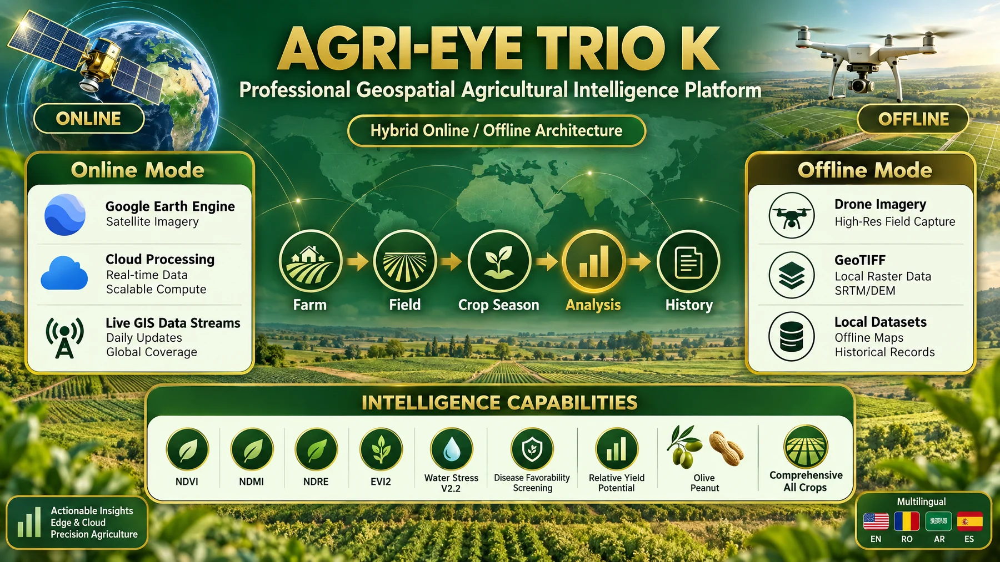
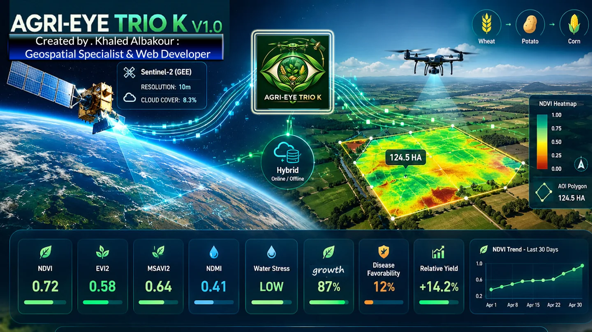

Satellite intelligence
Use Google Earth Engine workflows to explore vegetation, moisture and environmental indicators across a selected field and date range.
Sentinel-2Sentinel-1Climate data


HYBRID AGRICULTURAL INTELLIGENCE
One connected workflow for satellite-based crop screening, drone imagery and practical geospatial insight — online and offline.
AGRI-EYE TRIO K is a hybrid agricultural monitoring platform designed to bring satellite data, drone imagery and GIS tools into one workflow. Review field conditions, compare indicators and identify areas that may deserve closer inspection.
It is a decision-support and screening tool. Satellite indicators and risk proxies help guide field verification; they do not replace laboratory testing, agronomic assessment or confirmed disease diagnosis.
About the project ↗Use Google Earth Engine workflows to explore vegetation, moisture and environmental indicators across a selected field and date range.
Work with supported local raster imagery, inspect spatial variation and prepare candidate target zones for field follow-up.
Explore map layers, KPIs and statistics, then export reports and geospatial files to support a documented field workflow.
Bring mapping, crop screening and export tools together in a practical desktop workflow.
Draw or edit an area of interest, explore basemaps and review analysis layers with map context.
Review supported indices such as NDVI, NDRE, NDMI, NDWI and EVI2 where input data allows.
Crop workflows surface candidate patterns and relative proxies for further investigation — not definitive diagnosis.
Export candidate zones and geospatial packages to help plan high-resolution inspection and follow-up.
Create PDF summaries and export supported formats including GeoJSON, KML/KMZ and Shapefile.
Use online satellite analysis or supported offline drone/raster workflows, depending on the task and available data.
An overview of how AGRI-EYE TRIO K brings crop-oriented screening, offline drone imagery, GIS and reporting into one workflow. This graphic is a high-level comparison, not a claim that any platform is best for every task.
Capabilities vary by product version, available datasets and operating context. Results are screening outputs and should be verified in the field.
Project capability overview · select the image to enlarge
Choose a card to learn what its screening workflow is designed to explore.
 CROP / 01
CROP / 01Reviews vegetation vigor and canopy development through supported indices. Moisture-related indicators and spatial variation can help flag areas for field scouting; seasonal growth patterns may support relative production-potential assessment when data is suitable.
 CROP / 02
CROP / 02Explores crop vigor, canopy variation and moisture-related patterns across the selected field. The map can help prioritize scouting for uneven growth or possible stress, while any yield-related interpretation remains an estimate rather than a measured harvest forecast.
 CROP / 03
CROP / 03Maps vegetation condition and within-field differences that may relate to crop development or water stress. Candidate zones can guide ground checks for uneven canopy, wet areas or other visible symptoms; satellite data alone cannot confirm a specific potato disease.
 CROP / 04
CROP / 04Separates vegetation-growth indicators from moisture-related indicators and screens for patterns that may warrant orchard inspection. Peacock spot and erosion outputs are candidate screenings only; mixed tree canopy, grass, soil and shadow can affect satellite pixels.
 CROP / 05
CROP / 05Explores canopy growth, moisture patterns and candidate areas for follow-up. Late leaf spot and waterlogging screening, plus an aflatoxin-risk proxy, can help prioritize inspection but cannot confirm infection or measure aflatoxin content.
 MODULE / 06
MODULE / 06Provides a dedicated soil-oriented analysis workflow using the supported online engine. Outputs depend on the available datasets and should be interpreted as screening information, not a substitute for laboratory soil sampling and testing.

ENGINE / 07A general workflow for supported online or offline datasets when a specialized crop module is not the right fit. It brings common mapping and indicator tools into a flexible analysis path, with results governed by input data quality.
Swipe horizontally or use the arrows to explore all modules.

Khaled Albakour · Project creator
Geospatial Specialist & Web Developer
AGRI-EYE TRIO K grew from crop-analysis experiments on Google Earth Engine into a hybrid desktop platform connecting satellite screening, drone-derived imagery and GIS outputs.
I developed this project to connect my practical agricultural experience with my growing skills in GIS, remote sensing, software development and data analysis.
The work also highlighted the value of formal academic training in geospatial technologies, agricultural data science and software engineering—especially for validating remote-sensing models against field observations. Where validation is not established, outputs are presented as indicators, relative proxies or screening candidates, not as confirmed diagnoses.
For project information, professional collaboration or a technical discussion about AGRI-EYE TRIO K, get in touch.